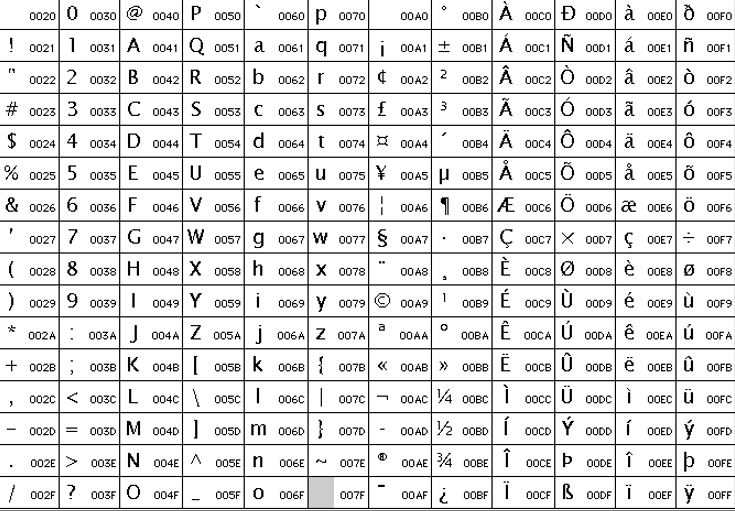

Definición
Es un estándar de codificación de caracteres que tiene la finalidad de visualizar y transmitir textos de
diversos idiomas y disciplinas técnicas, incluyendo hasta lenguas muertas.
La codificación de caracteres permite representar caracteres como números
¿Para qué fue creado?
- Universalidad: Un repertorio suficientemente amplio que albergue a todos los caracteres probables en el
intercambio de texto multilingüe.
- Eficiencia: Las secuencias generadas deben ser fáciles de tratar.
- No ambigüedad: Un código dado siempre representa el mismo carácter.
Ventajas
- Es actualizado Cada año.
- Cuenta con los caracteres de casi todos los idiomas del mundo, caracteres, sistemas ideográficos y
colecciones de símbolos.
- Es compatible con versiones anteriores de esquemas de codificación ASCII y se evitan complicaciones de
"endianness" u orden de bytes.
- Brinda soporte a C, Java, JavaScript, Perl, Etc.
¿Cómo funciona?
- Asigna un número único (un punto del código) a cada carácter.
- UTF-8, UTF-16 Y UTF-32
- Se añade una “U” antes de la cadena.
Tabla de Caracteres Comunes

Versiones
- 1.0 (Octubre 1991 con 7161 caracteres)
El repertorio inicial cubre los alfabetos: árabe, armenio, bengalí, bopomofo, cirílico, devanagari,
georgiano, griego/copto, guyaratí, gurmukhi, hangul, hebreo, hiragana, kannada, katakana, lao, latino,
malayalam, oriya, támil, télugu, thai, y tibetano.
- 1.0.1 (Junio 1992 con 28,359 caracteres)
Definido el primer conjunto de 20.902 ideogramas CJK unificados. (Contiene símbolos y puntuación
utilizados para escribir los idiomas chino, japonés y coreano)
- 1.1 (Junio 1993 con 34,233 caracteres) Se agregan 4.306 caracteres Hangul más al conjunto original de
2.350. Se elimina el alfabeto original tibetano.
- 2.0 (Julio 1996 con 38,950 caracteres)
Se reacomodan todos los caracteres hangul de manera agrupada y se agregan otros 11,172. Se reincorpora
el alfabeto tibetano en nueva ubicación.
- 2.1 (Mayo 1998 con 38,952) Se agrega el símbolo del euro.
- 3.0 (Septiembre 1999 con 49,259 caracteres)
Se agregan ideogramas Cherokee. Escrituras Etíope, Jemer, Mongol, Myanmar, Ogham, Alfabeto rúnico,
Cingalés, Siríaco, Thaana, Silabario unificado de los indígenas canadienses, y Yi además de los patrones
Braille.
- 3.1 (Marzo 2001 con 94,205 caracteres)
Se agregan los alfabetos Deseret, Gótico y Etrusco, y los símbolos de Notación musical moderna, Música
bizantina, y 42.711 ideogramas de CJK unificado.
- 3.2 (Marzo 2002 con 95.221 caracteres)
Agregadas las escrituras filipinas: Buhid, Hanunoo, Tagalo, y Tagbanwa.
- 4.0 (Abril 2003 con 96,447 caracteres)
Se agrega el Silabario chipriota, Limbu, Lineal B, Osmanya, Shaviano, Tai Le, y Ugarítico, y los
símbolos Hexagrama.
- 4.1 (Marzo 2005) con 97,720 caracteres)
Agregados Buginese, Glagolítico, Kharoshthi, New Tai Lue, Persa antiguo, Syloti Nagri, y Tifinagh. Se
separa el Copto del alfabeto griego. Símbolos griegos antiguos para música y numeración.
- 5.0 (Julio 2006 con 99,089 caracteres)
Agregados Balinés, Cuneiforme, N'Ko, Phags-pa, y Fenicio
- 5.1 (Abril 2008 con 100,713 caracteres)
Agregados escritura caria, Cham, Kayah Li, escritura lepcha, Alfabeto licio, Alfabeto Lidio, Alfabeto Ol
Chiki, Rejang, Saurashtra, Sundanés, y el Vai. Los jeroglíficos del Disco de Festos, fichas de Mahjong y
de Dominó. Adiciones importantes para el Birmano, letras y abreviaturas de amanuense utilizadas en
manuscritos medievales y la adición de la ß mayúscula.
- 5.2 (Octubre 2009 con 107,361 caracteres)
Agregados: bamúm, javanés, lisu, meetei mayek, samaritano, tai tham, y tai viet. Se ha ampliado el
devanagari con la adición del alfabeto sánscrito. Ampliaciones importantes para abjasio, el silabario
unificado de los indígenas canadienses, copto, khamti shan, malayo, myanmar. También se agregan símbolos
y caracteres históricos como los jeroglíficos egipcios de Gardiner, arameo imperial, avéstico, kaithi,
antiguo árabe del Sur y turco antiguo.
- 6.0 (Octubre de 2010 con 109,449)
Primera versión principal del estándar publicada exclusivamente en soporte electrónico. Agregados
mandeo, batak y brahmi, ampliaciones de lenguajes africanos como tifinagh, etíope y bamúm. Otras
adiciones importantes son: 222 ideogramas CJK, 1000 símbolos incluyendo los pictogramas emoji, el nuevo
símbolo oficial para la rupia y símbolos alquímicos además de ampliaciones de los atributos de los
caracteres y otras modificaciones normativas y algorítmicas.
- 6.1 (2012 con 110,116 caracteres)
Incluye extensiones de varios alfabetos existentes; son significativas las adiciones al alfabeto árabe
que incluyen 143 símbolos matemáticos alfabéticos, y los alfabetos Pollard Miao, Sorang Sompeng,
escritura meroítica, Chakma, Alfabeto sharada y 13 emoticonos.
- 6.2 (2012 con 110,117 caracteres)
Publicación especial para la introducción de la Lira turca
- 6.3 (2013 con 110,122 caracteres)
Revisión del algoritmo de texto bidireccional con la adición de 5 caracteres especiales. El nuevo
algoritmo bidireccional mejora la representación conjunta de textos de diferentes fuentes respetando el
orden correcto de los caracteres.
- 7.0 (2014 con 112,956 caracteres)
Agrega 23 nuevos sistemas de escritura.
- 8.0 (2015)
36 emojis, lengua lk de Uganda, Kulango de Costa de Marfil y otros idiomas de Africa. Además se hacen
adiciones al CJK.
- 9.0 (2016)
72 nuevos emoticonos, se eliminan emojis que incitan a la violencia.
- 10.0 (2017 con 136,690 caracteres)
Entre otros se agrega el símbolo de Bitcoin, 56 caracteres emoji y los sistemas de escritura: Masaram
Gondi, Nü Shu, Soyombo y la escritura mongola cuadrada de Zanabazar. Se introduce la extensión F de
caracteres unificados CJK.
- 11.0 (Junio 2018 con 137,374 caracteres)
Dogra, letras capitales de Georgian Mtavruli, Gunjala Gondi, Hanifi Rohingya, Makasar, Medefaidrin, Old
Sogdian, Sogdian, y varios símbolos (5 nuevos ideogramas unificados CJK, 66 emoji adicionales, copyleft,
media estrella, símbolos astrológicos adicionales y de ajedrez chino Xiangqi)
- 12.0 (Marzo 2019)
230 nuevos emojis relacionados a colores de piel, sentimientos y discapacidades.
- 13.0 (Marzo 2020 con 143,859 caracteres)
Soporte a idiomas menos utilizados. Se agregan lenguas muertas como Yezidi, chorasmian, kazajstan,
turkmenistan, dives akuru, khitan y varios idiomas de Africa. 55 nuevos emojis.
- 14.0 (Septiembre 2021 con 144,697 caracteres)
37 nuevos emojis, nuevas lenguas muertas como toto, crypo-minoan, antiguo uigur, tangsa. Adiciones al
alfabeto árabe.